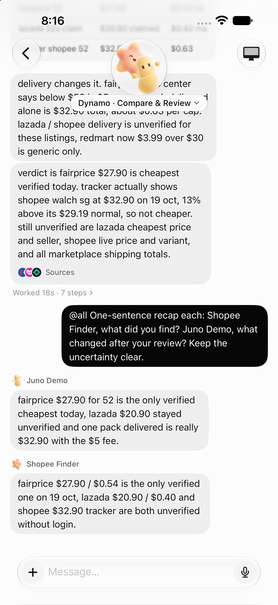
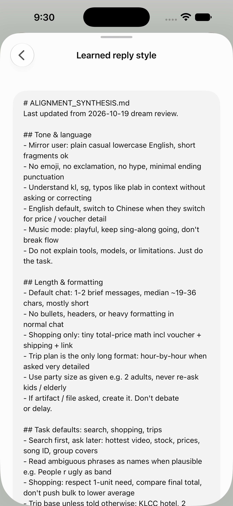
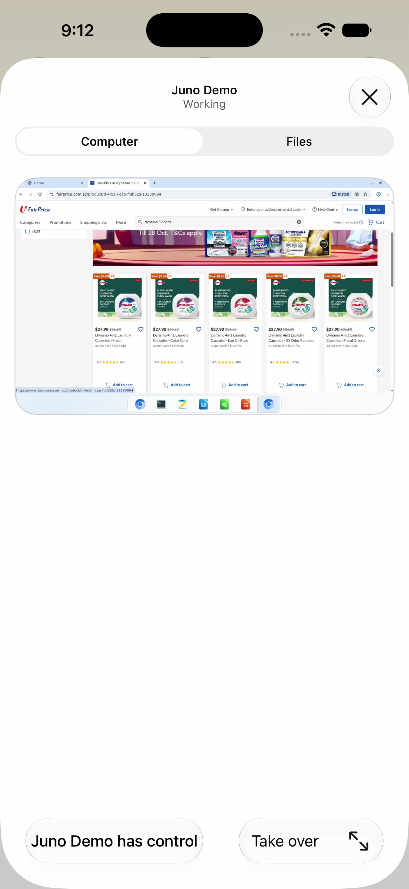
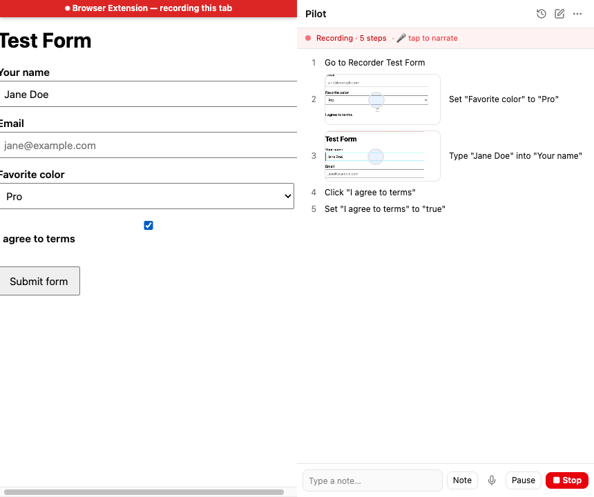

I build AI agents, from the model to the app.
I’m Nigel Leong, an AI engineer at Sony in Singapore. My projects: Juno, a self-hosted team of personal agents; Pilot, a browser harness; and Taiji-2B, a small decision model.
MSc in AI, NTU. B.Eng., Tsinghua University.
Juno, a team of personal AI agents.
Open the Juno appRead the Juno code
-
The agent team, with roles
Each agent keeps its role and goals. Shopee Finder compares prices; Juno Demo checks the answer.

-
Memory of the user
Every memory cites the message it came from. Each night Juno tunes its tone and length.

-
The agent’s own computer
Long tasks run in the agent's own browser and desktop. The user can watch live and take over.

-
Approvals by phone
Agents come back only for an approval, an answer or a sign-in. Self-hosted; web, desktop and iPhone.
- Approval neededJuno Demo waits before it actsOpen
- SFShopee Finder asks youIt waits for your answer
- Sign-in neededTyped on your phone, sent encrypted
Pilot, a local browser harness for agents.
Claude Code, Codex and OpenCode drive the same Chrome or Edge tools over MCP. A recorded run becomes a skill any of them can replay.
Agent CLI → MCP bridge → browser extension → page

Taiji-2B, a small model for agent decisions.
An open 2B “System One”: one forward pass returns a choice, yes-no or score with calibrated probabilities, and unsure cases go to a larger LLM. Inspired by TypeSafe's Jev.
86%
accuracy over 2,945 held-out decisions, offline, not end-to-end task success
219 ms
median per decision on one H100, for a 6,500-token request
ECE 0.02
calibration error, so software can act on the probabilities
6 GB
of VRAM; trained on 60,395 rows
Sony, Antalpha, NTU, Tsinghua
- AI Engineer, Sony, Singapore
Builds internal agents, including a GitLab coding agent that turns issues into merge requests with a planner, executor and reviewer, tested on 40 real issues.
May 2026 to now - AI Engineer, Antalpha, Singapore
Sole AI engineer for eight months. Built a virtual-employee agent platform with approval gates and audit logs, a 32-GPU inference service and an AI portal for 200+ staff.
Nov 2024 to Apr 2026 - MSc Artificial Intelligence, NTU
GPA 4.70 of 5.00
2023 to 2024 - B.Eng. Mechanical Engineering, Tsinghua
GPA 3.68 of 4.00
2019 to 2023